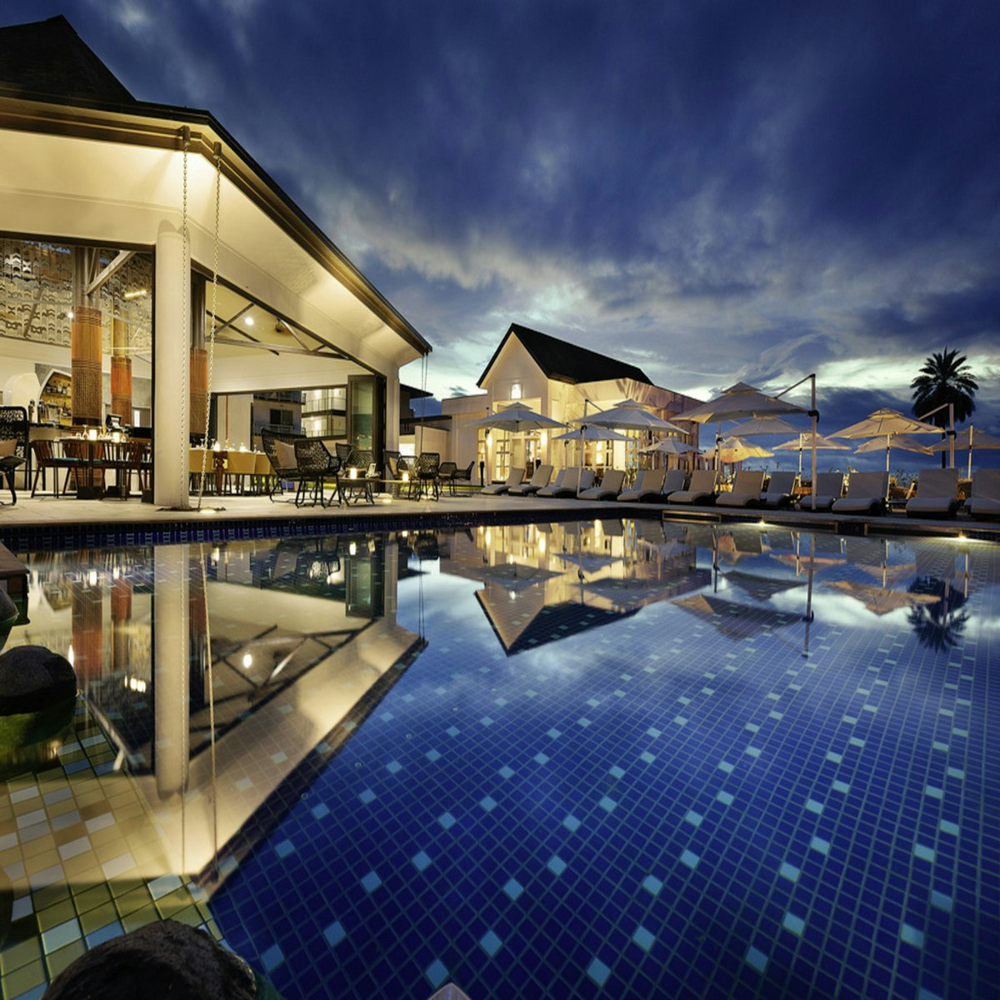
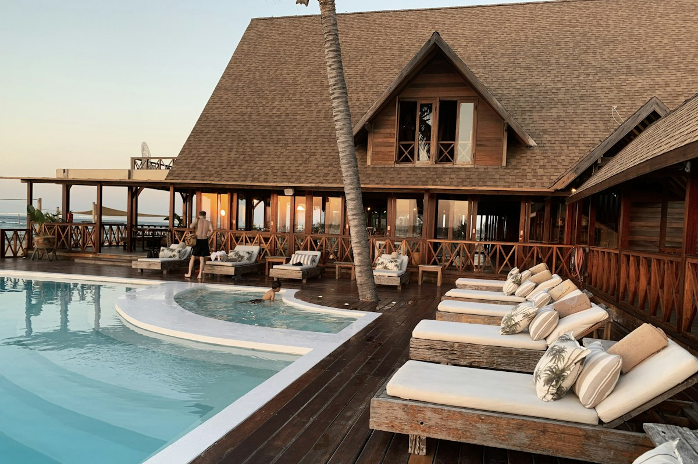

Kerala Backwaters & Hills
From the emerald tea estates of Munnar to the spice-scented forests of Thekkady and a slow, golden-hour cruise on Alleppey’s backwaters — a balanced first-timer’s Kerala with private transfers and curated stays.
- Overnight private houseboat in Alleppey
- Eravikulam National Park & tea museum
- Periyar Lake wildlife boat safari
- Spice plantation guided walk
- Fort Kochi heritage walk
- Kathakali & Kalaripayattu shows
Day-by-day itinerary
Day 1 · Arrive Kochi · Drive to Munnar
Meet our representative at Cochin International Airport. Scenic 4-hour drive past Cheeyappara and Valara waterfalls into the tea country. Evening at leisure.
Day 2 · Munnar Sightseeing
Visit Eravikulam National Park (Nilgiri Tahr), Mattupetty Dam, Echo Point and the Tata Tea Museum. Optional Kathakali show in the evening.
Day 3 · Munnar → Thekkady
Drive to Thekkady. Afternoon guided spice plantation walk; evening Kalaripayattu martial-arts performance.
Day 4 · Periyar Lake → Alleppey Houseboat
Morning boat ride on Periyar Lake. Board your private premium houseboat at Alleppey and cruise the backwaters, with Kerala meals cooked on board.
Day 5 · Alleppey → Kochi
Disembark after breakfast. Kochi heritage walk: Chinese fishing nets, St. Francis Church, Jew Town and Mattancherry Palace.
Day 6 · Departure
Breakfast and transfer to Cochin airport with memories of God’s Own Country.
Hotels
or similar
Tea County Resort

Spice Village (CGH)
Premium Houseboat
Inclusions
- 5 nights in handpicked 4★ hotels + 1 night houseboat
- Daily breakfast & dinner; all meals on houseboat
- Private AC Toyota Innova Crysta for all transfers
- Periyar boat safari & Eravikulam entry tickets
- Kathakali & Kalaripayattu show tickets
- Driver allowance, tolls, parking & state taxes
Exclusions
- Airfare / train tickets to Kochi
- Lunch on Days 1–3 and 5
- Camera fees & personal expenses
- Travel insurance
- GST 5% & TCS as applicable
- Anything not mentioned in inclusions
Gallery
24 photos